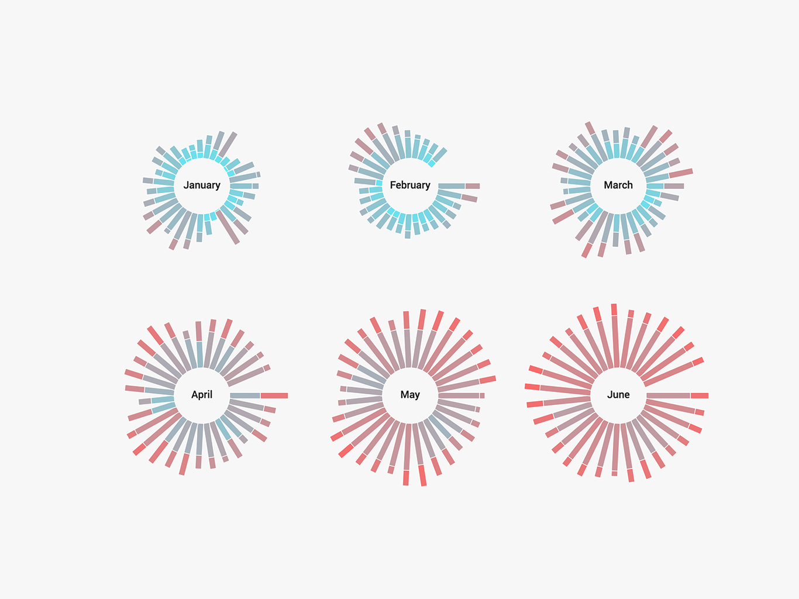
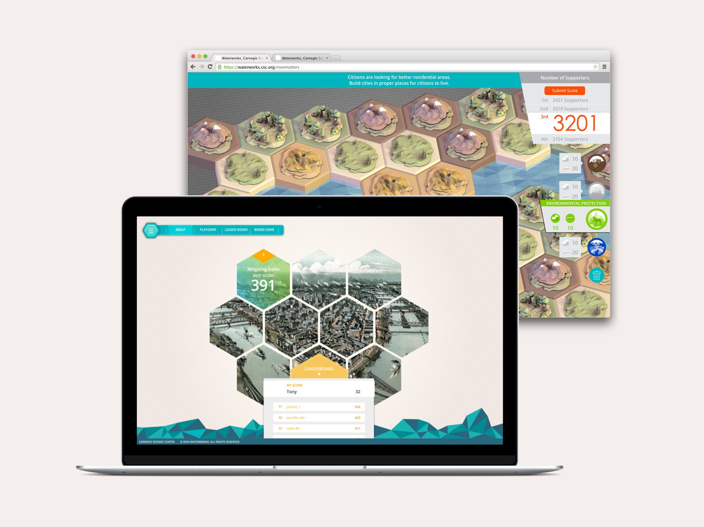
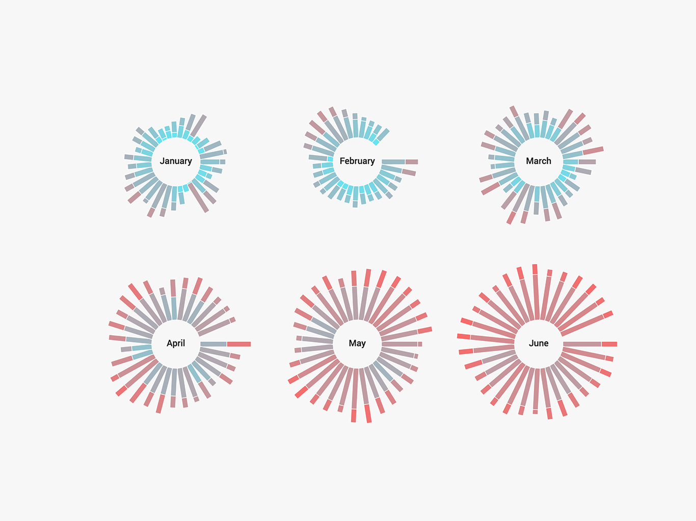
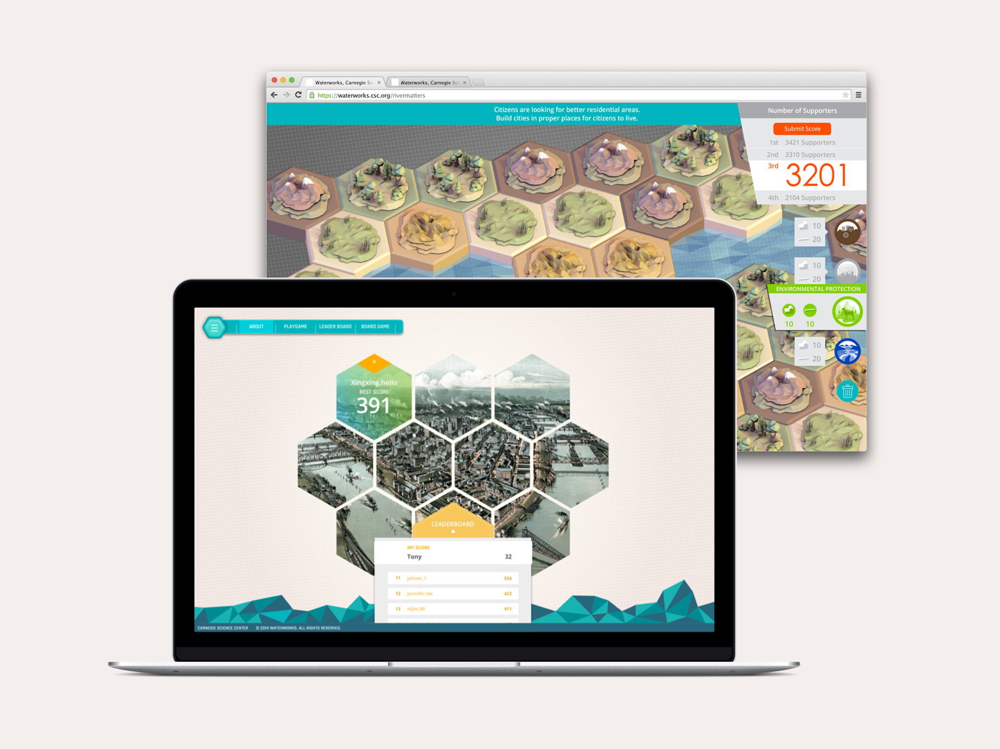

Rivermatters
Web
Late 2014

Rivermatters is physical and digital city planning game that markets upcoming exhibition, H2Oh! Carnegie Science Center. The goal of RiverMatters project was to enable students and visitors of Carnegie Science Center to explore and understand different needs of city departments and consequences of their action.
Rivermatters web game enables a visitor to explore and plan out the city individually. To transform 4 player game into 1 payer game, we changed the goal. In the physical board game, the educational goal was to allow students to discuss and cooperate, in the online game, the goal was to let the visitors to experiment and learn. To engage visitors, we implemented the scoreboard on the top right corner.
We integrated the board game into the Rivermatters website, bundled with a client side dashboard application. This was to allow museum staffs to open competitions and manage rewards as marketing events. Also, with this dashboard, the staffs were able to track the number of website visitors, game players, and the winner of each competition.

One of the product designed for the classroom was a board game that generates a space where students to discuss and express their opinion. We designed the game consists of four different roles of City Planning Department, Industry Department, Environment Protection Department and Water Resource Department. Four students are formed as a team, representing each department roles. In the game, students are asked to come up with one design plan that scores the most.

In middle school, classes take about 40-50 minutes and teachers use 10-15 minutes to wrap up the class. While we were testing the product with students, we spent full 20 minutes just to explain the game. To reduce this time and to provide teachers time to wrap up the class, we created tutorial video. As a result, students could fully understand the game after watching the tutorials for 6 minutes. While developing the tutorial video, we also learned that students focuses more closely into each specific rules when their roles were called individually.
Tutorial Video
Event Video
Our project started with having a conversation with our client, Carnegie Science Center. We met the staff members including the director, exhibition designer, and education initiatives. Our questions were formed to understand their mission and their target demographic. Broadly, Carnegie Science Center was looking for an experience which can market their upcoming exhibition H2Oh! for their main target demographic, middle School students, and general museum visitors.
After the conversation, we roughly planned out our process. Even though we went through 2 more design sprints and 4 more small design projects than we expected, this timeline guided us to track and validate our sprints. We also adjusted our timeline as we go to make sure we were designing for necessity.
Hover over on the bars to see detailed information.
Timeline
Total Time Spent
During our meetings, Staff members of Carnegie Science Center mentioned that their main visitors were school students and teachers who were coming for field trips. Also, school teachers were looking for class materials related to the museum visits. Some visitors came in for a family gathering, usually with children aged 5-10. Based on this meeting, we decided to focus on school field trip experience.
We want a piece that can market our upcoming exhibition, H2Oh!
Schools have technological barriers and the pieces need to fit in educational standards.

We want a unique experience as a family as well as information about the exhibition.
Thanks to help from the Carnegie Science Center, arranging meetings with students and teachers, we were able to interview with three different middle school teachers, sharing our ideas and talking about things to consider designing course materials. Here, we learned that there were some restrictions on providing materials to the students. As we went through the interview, we adjusted our designs so that it could be presented to the students at the end of the day. Below are the three main insights from the interviews.
Technology barrier: During the interview with middle school teachers we found out that it is not always possible to bring newest technology inside the classroom.
Time Constraint: The class usually takes around 40 to 50 minutes including roll calls, instructions and lessons learned. Therefore, the experience had to be within 30 minutes.
Educational Standard: The contents needed to be built under educational standards in order to be introduced to the students in the classroom. There were several educational standards that were suggested by Carnegie Science Center.
At the end of each design sprint, we conducted testing with students. Eventually, we conducted 5 different user testing sessions with 24 users including our target demographic. The first two sessions were to test user engagements and the last three sessions were to test prototypes and receive feedbacks. Students don't participate if they don't find the product interesting. Since we were designing a game for groups, we needed to make sure that the game is engaging so that everyone can actively participate in the game. In the latter sessions, we were looking for usability issues when students interacting with our prototypes, to iterate on the detailed interactions.
Next, Read More of